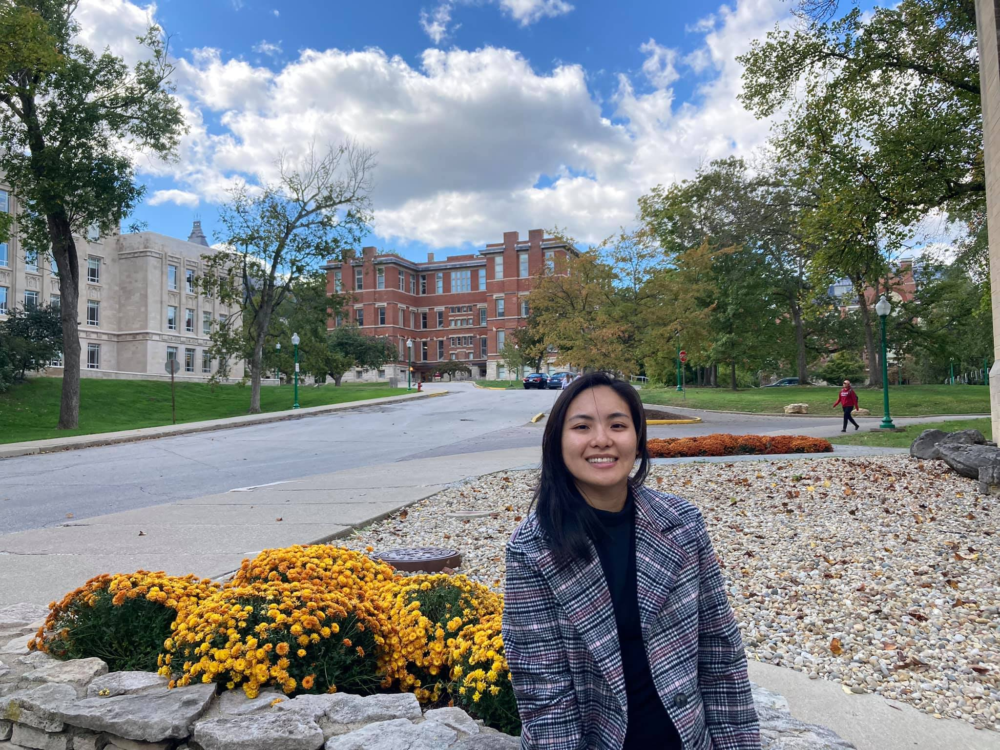

About me
My name is Linh Luu and i am from Saigon-Vietnam. I am living in a family with five members: my husband, my two adorable kids and my mom. I am a mix between introvert and extrovert person.
i love to hang out with my friends and family and we do a lol cooking together. I like to assess the place and situation before speaking. When someone approaches me, I would like to be
humble and kind enough to answer their questions. Most importantly, I’m comfortable with people whom I know, so that the information being conveyed will be interpreted easily. While studying
or participating in any activities, I try to focus so that my concentration is towards the things that I’m doing. My hobbies are basically: cooking, gardening and singing.
Why i am taking CIT 312?
I am taking CIT 312 because i want to learn more about creating professional websites or applications that would be effective in any platforms (tablet, mobile and browser),
and to apply web development skills in the context of real world applications. Moreover, i want to improve my software development skills and learn more about advance level of CSS and HTML.
What I hope to achieve from CIT 312
Hopefully by the end od this course, i will be able to perform these skills:
- Use advanced CSS selectors to use CSS more effectively
- Use Preprocessors to compile CSS files
- Create pages geared to display on mobile devices, using CSS Techniques
- Use advanced positioning techniques like Grid and FlexBox
- Using External CSS libraries to build the UI of a website
- Use CSS Animations effectively